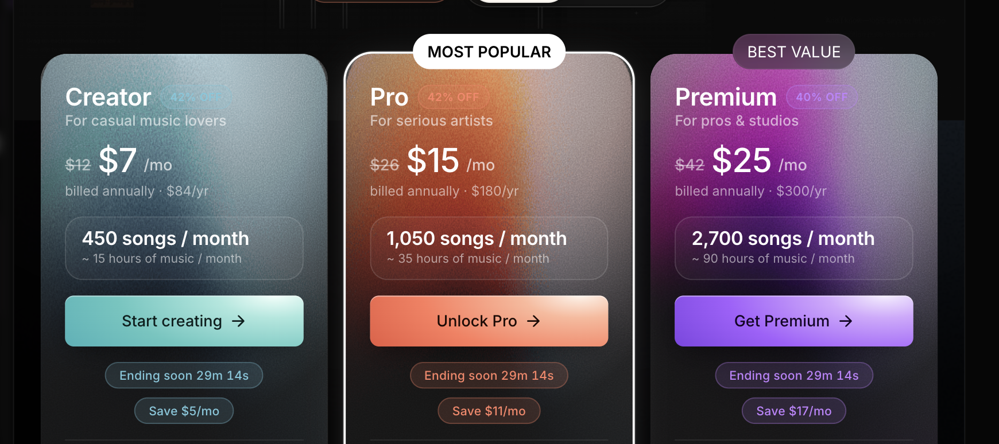
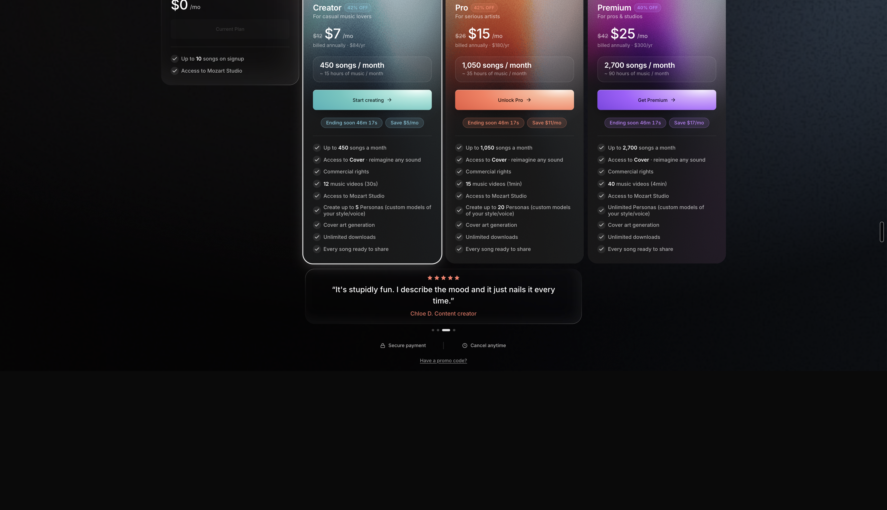
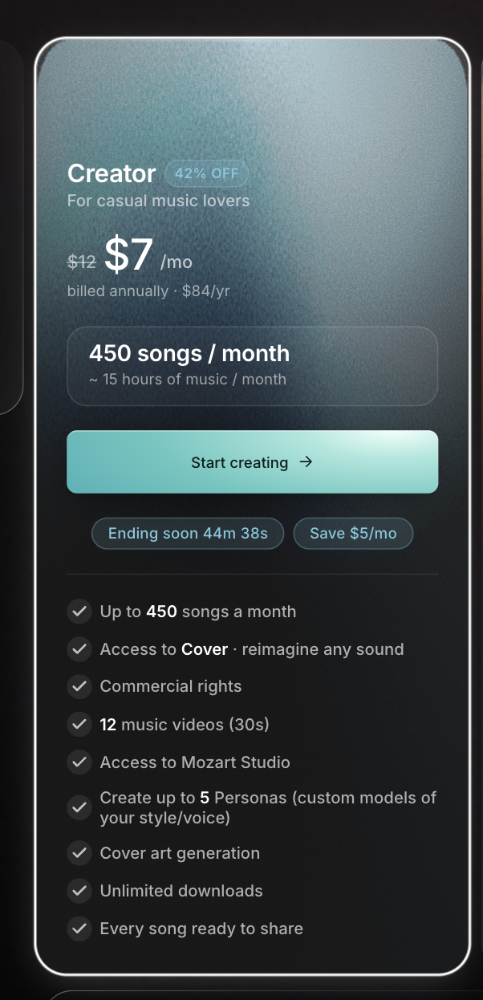
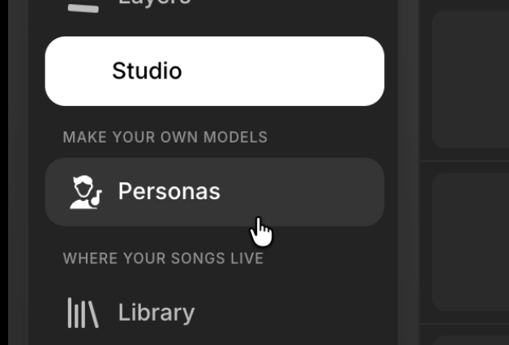
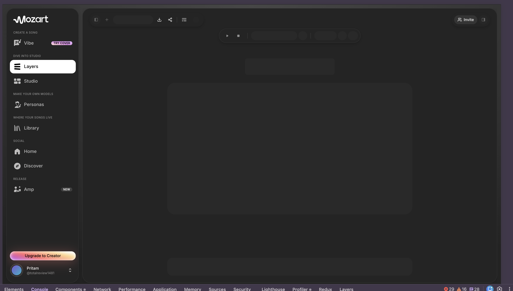
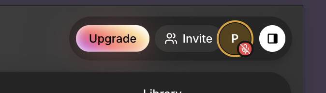
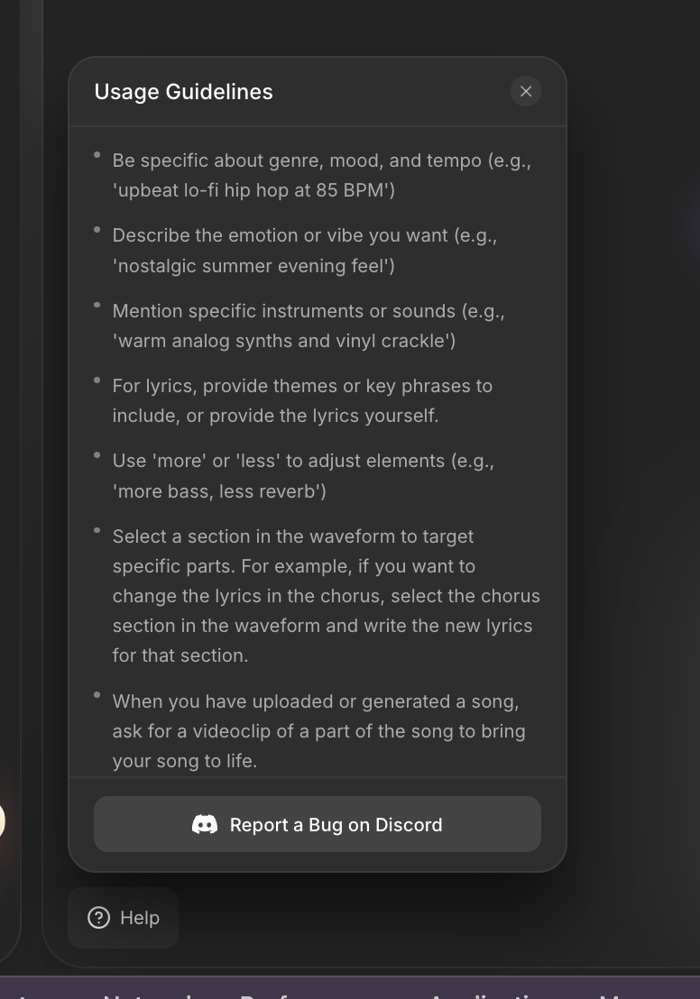

1How I see Mozart
The way I see it, Mozart isn't for people who just want to type a prompt and get a song. It's more for someone who actually knows music and isn't in a hurry — who wants to build the track themselves, not just generate it. It works like a co-producer inside a real DAW, so you stay in control of what you make. That's the part I like about it.
2Hands-on findings
First-hand, using the live product. Grouped by surface.
1. Discount badges are nearly invisible + no hierarchy Revenue
The "42% OFF" / "40% OFF" badges are colored text on a same-hue gradient (cyan-on-cyan, orange-on-orange, purple-on-purple) — the single most persuasive element is the hardest to read, and likely fails WCAG contrast. The three plans also read as one wall of text: same layout, weight and size, so nothing guides the eye to the recommended tier.

2. Upgrade page over-scrolls into dead space Bug
The plans view scrolls freely past its content into a large empty black area, and clips the card headers at the top — the conversion screen feels unanchored.
max-height: 100dvh, scroll inside only when needed, lock body scroll while open, remove the empty overflow.
3. Plan-card border-radius doesn't nest Bug
The outer selection border and inner gradient panel use mismatched radii, so the rounded corners don't sit concentrically.
inner = outer − border. One line.
4. Active nav item loses its icon Bug
On the selected item the pill goes white and the label flips to black — but the icon stays white and disappears (Studio shows text only, while other rows keep their icon).
currentColor so it inverts with the label.
5. Flicker when switching sidebar options Bug
Switching items flickers — the selection/content flash before settling, so navigation feels unstable.
6. Controls look enabled while the view is still loading Bug
During a Layers/Studio switch the toolbar buttons (add, search, download, share, layout, transport) render at full opacity while the canvas is still skeleton-loading — so you can click controls that aren't wired up yet. That same frame also showed ~29 console errors / 16 warnings — worth a triage pass; errors during transitions likely drive #5.

7. …but control-readiness is inconsistent Bug
On switching to Vibe, the Invite button stays disabled until everything finishes loading — the opposite of #6. So readiness feels arbitrary across the app.

8. Returning to Studio should resume the last project Suggestion
Leaving Studio and coming back doesn't reopen the project you were working on — friction on every context-switch.
9. Two stacked loading states per navigation Suggestion
Navigating shows a spinner in the sidebar, then a shimmer skeleton on the page — two affordances back-to-back for one action; it reads as janky.
10. Volume doesn't stick when switching Layer ↔ Vibe Bug
If I turn the volume down in Layer, go to a Vibe session, then come back, it doesn't stay — it resets. So it can suddenly blast loud if there's a high-pitched or loud part.
11. Can't click to mute — have to drag it down Bug
Clicking the volume doesn't mute it; I have to drag the slider all the way down every time.
3Product ideas
Hum-to-track (mobile → desktop)
Record a melody on mobile → Mozart isolates it to a clean stem + MIDI → TAB suggests chords/drums → the session syncs to desktop to arrange & mix by text. Turns the hardest DAW moment (the blank start) into a 30-second win, and scopes mobile as capture, not a mini-generator.
A "Hooks"-style share loop (inspired by Suno)
Suno's Hooks lets a creator turn a song into a short vertical clip and publish it to the community — free, driving virality + discovery. Mozart is strong at making but thin on sharing (where Suno wins the consumer). A Mozart Hooks would be stronger thanks to the authorship angle: auto-detect or hand-pick the catchiest 8–15s of a track you actually produced, wrap it with cover art/captions, and export a vertical clip in one click.
4Beyond the UI — product & process
A proper help / docs page
You already have a "Usage Guidelines" popover with good tips. I'd grow it into a proper help/docs page — short tutorials and example prompts — and show small tips inside the app when they're useful (like when a generation fails). Better guidance would fix a lot of the "it didn't work" moments.

Learn from your power users
Instrument the product and study what your best creators actually do — the prompts, flows and settings that produce great tracks — then surface those as templates/defaults/tips for everyone. The fastest way to raise the median output is to productize the top 5%'s habits.
Do regular customer calls
Talk to users on a regular cadence — it surfaces exactly this kind of friction long before it shows up as churn. At Emergent we do this often and it pays off; I'd push for it here too.